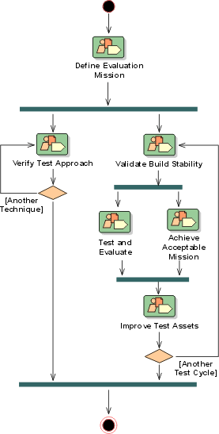

Development Case: Test
Discipline 
There are no formal changes to the Test Discipline - it is used as is (see the RUP Overview: Test).

Artifacts
| Artifacts | How to use | Review Details | Tools
Used/ Templates/ Examples |
|||
| Incep | Elab | Const | Trans | |||
| Could | Must | Must | Must | Formal- Internal |
Template: Test Evaluation Summary | |
| Test Package | Could | Could | Should | Should | Formal- Internal |
Embedded in the Design Model (see Template: Design Model). |
| Could | Could | Should | Should | Informal | ||
| Test Subsystem | Could | Could | Should | Should | Formal- Internal |
Embedded in the Implementation Model (see Template: Implementation Model). |
| Could | Could | Should | Should | Informal | ||
| Test Suite | Could | Must | Must | Must | Formal- Internal |
Template: Test Suite |
| Could | Must | Must | Must | Formal- Internal |
||
| Could | Must | Must | Must | Formal- Internal |
|
|
| Should | Must | Must | Must | Formal- External |
Template- Test Plan | |
| Could | Must | Must | Must | Formal- External |
Template- Test Results | |
| Won't | Should | Should | Should | Formal- Internal |
Template: Workload Analysis Document | |
Notes on the Artifacts
None.
Reports
| Reports | How to Use | Tools Used / Templates/ Examples |
| Test Survey | Could - Use for review purposes as needed. |
Notes on the Reports
None.
Additional Review Procedures
None.
Other Issues
[Note any outstanding issues with the discipline's configuration here.
Such as the Test Approval Criteria:
- Test cases - Informally approved by the system testers.
- Test scripts - casual.
- The system testers decide if the test criteria for an iteration is fulfilled.
- The customer approves the final iteration.]
Configuring The Discipline
When configuring the Test Discipline help can be found in:
- RUP Discipline: Environment
- RUP Activity: Develop Development Case
- RUP Guidelines: Important Decisions in Test
You should also familiarize yourself with: